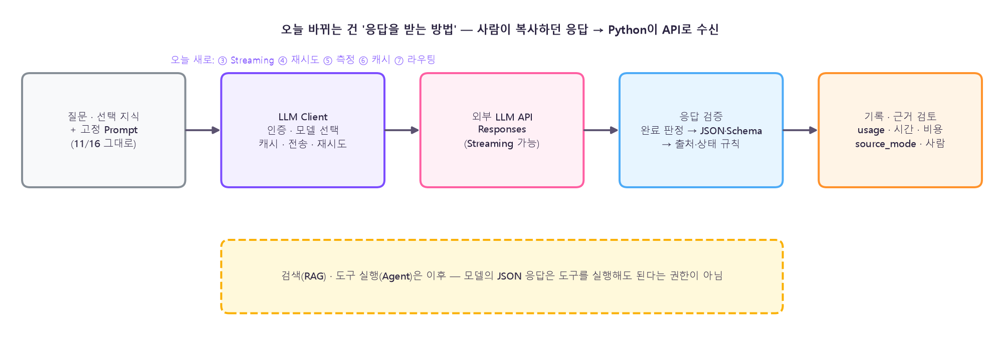
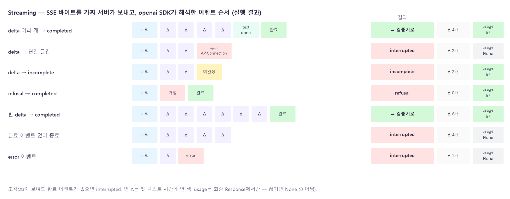
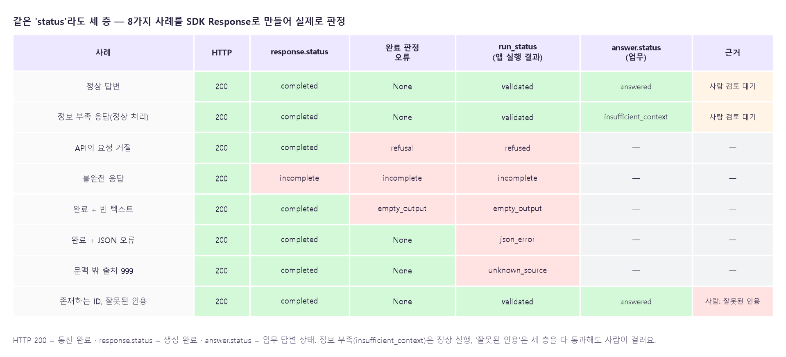
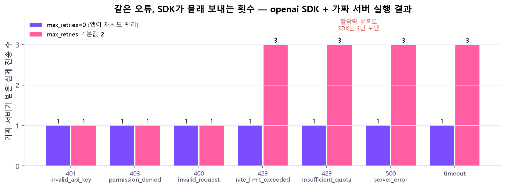
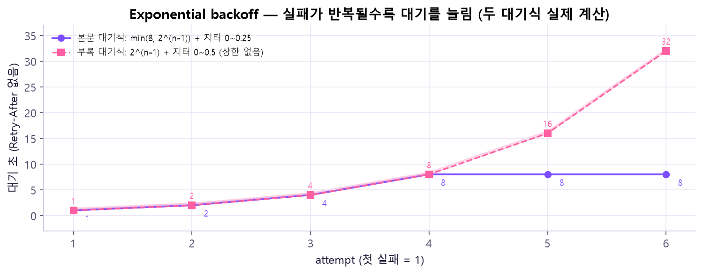
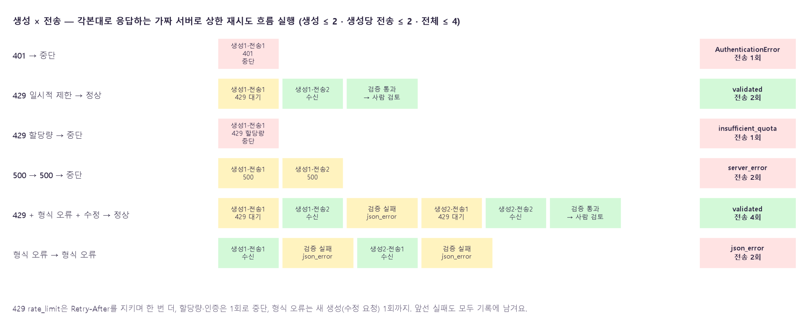
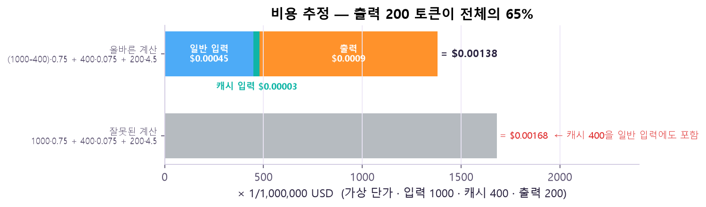
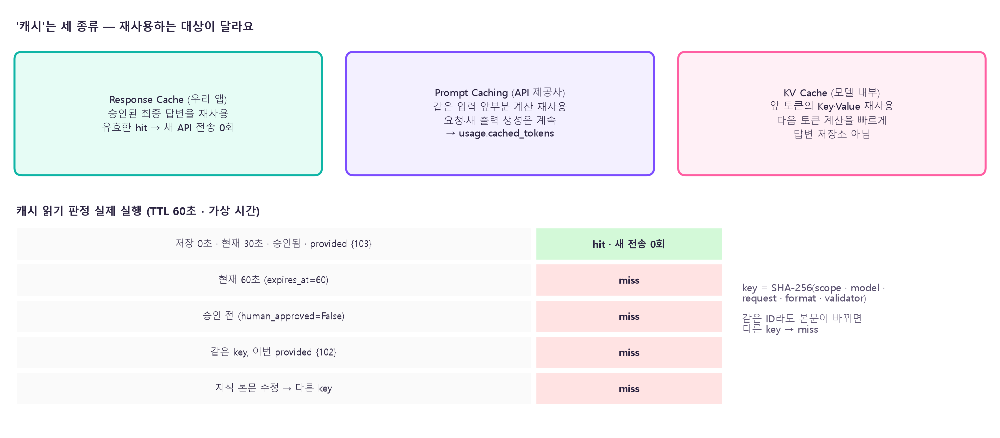

- LLM Client = SDK의 "보내고 받기" 위에 서비스의 정책(대기 · 재시도 · 검증 · 기록 · 캐시 · 모델 선택)을 얹은 코드. SDK는 전송만 해 주고, 몇 번 보낼지 · 무엇을 믿을지는 앱이 정해요.
- HTTP 200 ≠ 생성 완료 ≠ 형식 통과 ≠ 근거 맞음. 응답은 층마다 따로 판정해요. Streaming 조각이 보여도, Structured Outputs로 구조가 맞아도 아직 확정이 아니에요.
- 실패는 원인별로 기다리기 · 고치기 · 멈추기로 갈라요. 횟수는 한 곳(앱)에서만 세고, 모르는 값은 0이 아니라
None으로 남겨요.
🗺️ 큰 그림 — LLM 호출 한 번의 일생

호출 한 번은 아래 여덟 단계를 지나요. 이 페이지의 ①~⑧이 이 순서 그대로예요.
| 단계 | 하는 일 | 핵심 질문 |
|---|---|---|
| ① 준비 | 키 · 모델 · 연결 설정 | 이 자격으로 이 모델을 써도 되나? |
| ② 요청 | 지시 + 질문 + 고른 지식 + 출력 형식 | 모델에게 무엇을, 어떤 모양으로 달라고 하나? |
| ③ 수신 | 한 번에 받기 또는 Streaming | 언제 '다 받았다'고 말할 수 있나? |
| ④ 판정 | 완료 → 형식 → 규칙 → 사람 | 이 답을 믿고 다음 단계로 넘겨도 되나? |
| ⑤ 실패 처리 | 기다리기 · 고치기 · 멈추기 | 다시 보내면 나아지는 실패인가? |
| ⑥ 기록 | usage · 비용 · 시간 · 출처 | 얼마를, 얼마나 오래, 어떻게 얻었나? |
| ⑦ 재사용 | Response Cache · Prompt Caching | 같은 조건이면 다시 부르지 않아도 되나? |
| ⑧ 모델 선택 | Routing | 이 요청에 어떤 모델을, 왜? |
LLM Client (앱): 입력 구성 · 모델 선택 · 대기/재시도 · 검증 · 기록
└ SDK (openai): 요청 전송 · 응답 객체 · 예외 · 스트림 이벤트
└ LLM API (OpenAI Responses): 생성① 준비 — API · SDK · 인증 · 모델
| 말 | 뜻 | 예 |
|---|---|---|
| API (Application Programming Interface) | 프로그램이 다른 프로그램 기능을 약속된 형식으로 쓰는 접점 | POST https://api.openai.com/v1/responses |
| Client / Server | 요청을 보내는 쪽 / 처리하는 쪽 | FastAPI 앱은 사용자에겐 서버, LLM API 앞에선 클라이언트 |
| SDK (Software Development Kit) | API 사용을 돕는 라이브러리 | openai 패키지 — Python 호출 ↔ HTTP 요청, 응답 ↔ 객체, 오류 ↔ 예외 |
| LLM Client | 서비스의 호출 정책을 묶은 모듈 | 입력 구성 · 모델 선택 · 대기/재시도 · 검증 · 기록 |
인증 · 권한 · 잔액은 서로 다른 질문
| 인증 Authentication (401) | 권한 Authorization (403) | 잔액 · 한도 (429 insufficient_quota) | |
|---|---|---|---|
| 묻는 것 | 이 자격(API 키)이 유효한가? | 이 자격으로 이 모델 · 작업을 해도 되나? | 쓸 수 있는 돈 · 한도가 남았나? |
| 흔한 원인 | 키 오타 · 만료 · 폐기 · 다른 프로젝트 키 | 모델 접근 미허용 · 프로젝트 권한 | 잔액 없음 · 결제 · 지출 한도 |
| 고치는 곳 | 키 설정 | 계정 · 프로젝트 권한 | 결제 · 한도 설정 |
🤔 왜 이렇게 쪼개 봐? 원인마다 고치는 곳이 달라서요. 401을 "잠깐 기다리면 되겠지" 하고 반복하면 같은 실패만 쌓여요. ChatGPT 구독과 API 청구도 별개의 계정 · 잔액이에요.
키는 .env에, 읽기는 명시적으로
ENV_PATH = Path(__file__).resolve().with_name(".env") # 터미널 위치가 아니라 실행 파일 옆
settings = dotenv_values(ENV_PATH, encoding="utf-8-sig", interpolate=False)
os.environ["OPENAI_API_KEY"] = settings["OPENAI_API_KEY"].strip() # 값 확인 후 · 출력은 절대 안 함| 가짜 .env로 실제 실행 | 결과 |
|---|---|
| 정상 / 메모장 BOM 붙은 파일 | 둘 다 MODEL = gpt-5.4-mini-2026-03-17 · 키 설정됨 = True — utf-8-sig 덕분 |
OPENAI_API_KEY=본인_키 (예시 그대로) | RuntimeError: 이 실습의 .env에서 OPENAI_API_KEY을 설정하세요. |
| .env 없음 | FileNotFoundError — 호출 전에 멈춤 |
NOTE=${HOME}/x | '${HOME}/x' 그대로 (interpolate=False) |
.venv는 Python과 패키지가 든 실행 환경 폴더, .env는 키 · 모델 이름을 적은 설정 파일이에요.⚠️ 키는 코드 · HTML · Prompt · Git · 채팅 · 화면 캡처 어디에도 넣지 않아요.
.gitignore에 .env를 넣고, 결과에는 "설정됨 True" 정도만 남겨요. 키를 가리는 것과 보낼 데이터 자체를 줄이는 것(실명 · 내부 문서 제외)은 둘 다 필요해요.모델 ID — "지원한다"와 "실제로 확인했다"는 다른 칸
| 모델 ID | 공식 기능 | 확인 범위 (실제 호출 로그 기준) |
|---|---|---|
gpt-5.4-mini-2026-03-17 | Responses · Streaming · Structured Outputs · reasoning none | 일반 텍스트 생성 completed까지. Structured Outputs · Streaming은 별도 확인 필요 |
gpt-5.4-2026-03-05 | 같음 | 모델 목록에는 있음 · 생성은 미확인 → 안 했으면 not_run |
날짜가 붙은 ID는 snapshot(고정 버전)이라, 같은 이름이 나중에 다른 모델을 가리키지 않아요. client.models.list()로 내 키에 보이는 목록을 확인할 수 있는데, 목록에 있음 ≠ 생성 가능이에요(권한 · 잔액 · 요청 설정은 따로).
② 요청 — 무엇을, 어떤 모양으로
요청 한 건의 생김새
client.responses.create() 명령어 사전에서 자세히 →client = OpenAI(base_url="https://api.openai.com/v1", timeout=30.0, max_retries=0)
response = client.responses.create(
model=MODEL, instructions="한국어 한 문장으로 답하세요.",
input="API의 역할을 쉽게 설명해 주세요.",
reasoning={"effort": "none"}, max_output_tokens=1200, store=False)
print(response.status, response.output_text, response.usage)SDK가 실제로 보내는 건 POST /v1/responses + 아래 JSON이에요(가짜 서버로 받아서 확인). 키는 본문이 아니라 Authorization: Bearer … 헤더로 가요.
{"model": "gpt-5.4-mini-2026-03-17", "input": "API의 역할을 쉽게 설명해 주세요.",
"instructions": "한국어 한 문장으로 답하세요.", "max_output_tokens": 1200,
"reasoning": {"effort": "none"}, "store": false}| 구역 | 담는 것 | 예 |
|---|---|---|
instructions | 앱이 고정한 작업 · 제약 · 실패 기준 · 출력 규칙 (Prompt 설계) | "제공 지식으로 답하고 네 필드 JSON을 반환…" |
input | 이번 질문 + 실제로 고른 지식 | [{"role": "user", "content": user_input}] |
max_output_tokens | 출력 길이 상한 — 비용 상한이기도 함 | 1200 |
store | 응답을 서버에 저장해 둘지 | False — 옵션 하나일 뿐, 모든 로그 · 보존이 0이라는 뜻은 아님 |
user_input = json.dumps({"question": question, "knowledge": selected}, ensure_ascii=False)
provided_ids = {item["id"] for item in selected} # 출처 허용 범위 = 이번에 보낸 것
request = {"model": MODEL, "instructions": instructions_text,
"input": [{"role": "user", "content": user_input}], ...}지식 103만 골라 보내면 provided_ids = {103}이에요. DB에 101 · 102가 있어도 이번엔 안 보냈으니 출처가 될 수 없어요. 🤔 구역을 나누면 Prompt Injection이 막혀? 아니요. 구역은 읽기 쉽게 나눈 것이지 보안 장치가 아니에요. 자료 속 "이전 지시 무시" 같은 문장은 계속 데이터로 다뤄요.
Structured Outputs — 출력 구조를 API에 약속받기
| "JSON으로 답해" (Prompt) | Structured Outputs (API 설정) | |
|---|---|---|
| 어디에 | 지시 문장 안 | text={"format": {"type": "json_schema", …}} |
| 무엇을 | 부탁 | 필드 · 자료형 · 필수 · 허용 값을 Schema로 제약 |
| 못 하는 것 | 근거가 맞는지 · 길이 · 범위 같은 업무 규칙 · 거절/불완전/API 오류 처리 | |
Schema가 둘 — 보낼 것(WireAnswer) vs 받아들일 것(KnowledgeAnswer)
WireAnswer · 전송용 | KnowledgeAnswer · 로컬 검증용 | |
|---|---|---|
| 목적 | API에 넘길 최소 구조 (wire = 전송 경계) | 서비스가 받아들일 조건 (출력 계약) |
| 설정 | extra="forbid" | extra="forbid", strict=True + 길이 · 양수 · 최대 3개 |
source_ids=["101"] (실제 실행) | [101] — 문자열을 정수로 바꿔 줌 | ValidationError — 거부 |
WireAnswer → JSON Schema → 요청에 추가 명령어 사전에서 자세히 →output_format = {"type": "json_schema", "name": "knowledge_answer", "strict": True,
"schema": WireAnswer.model_json_schema()}
response = client.responses.create(**request, text={"format": output_format})만들어진 Schema는 required에 네 필드 · additionalProperties: false · status는 enum이에요. 그런데 source_ids는 그냥 {"type": "array", "items": {"type": "integer"}} — 양수 · 최대 3개 · "이번에 보낸 ID" 같은 조건은 없어요. 그래서 로컬 검사를 지우면 안 돼요.
③ 수신 — 한 번에 받기 vs Streaming
응답 객체에서 읽을 것
| 필드 | 뜻 | 헷갈리지 말 것 |
|---|---|---|
response.status | completed · incomplete 등 생성 상태 | JSON 안의 answered |
response.output_text | 텍스트 조각을 이어 붙여 주는 편의 속성 | "output[0]이 항상 답"이라는 가정 |
response.usage | 관측된 토큰 수 | 청구 금액 · 글자 수 |
response.id | API가 준 생성 응답 ID | 앱의 작업 ID run_id |
response._request_id | HTTP 요청 추적 ID (헤더 x-request-id) | response.id |
실제 호출 한 건의 예(일반 텍스트): 요청 모델 = 응답 모델 gpt-5.4-mini-2026-03-17, status = completed, output_text = "API는 서로 다른 프로그램들이 정해진 규칙으로 데이터를 주고받고 기능을 이용하게 해 주는 "중간 다리"입니다.", usage = input 31 (cached 0) · output 36 (reasoning 0) · total 67. 실행 시각 · 응답 시간 · 청구액은 로그에 없으니 기록도 None이에요.
Streaming — SSE · 이벤트 · delta
일괄 수신: [기다림──────────────] [완성된 응답]
Streaming: [기다림] [조각] [조각] [조각] [완료] ← 앞부분을 먼저 보여 줄 수 있음
총 완료 시간이 짧아진다는 뜻은 아님SSE(Server-Sent Events)는 HTTP 연결 하나를 열어 두고 서버가 event: 이름 + data: JSON 묶음을 이어 보내는 방식이에요. SDK는 이걸 event 객체로 바꿔 주고, event.type으로 갈라 읽어요.
event.type | 뜻 | 읽을 필드 |
|---|---|---|
response.created | 생성 시작 | — |
response.output_text.delta | 새 텍스트 조각 | event.delta |
response.output_text.done | 텍스트 항목 하나의 끝 (전체 끝 아님) | event.text |
response.completed | 전체 응답 완료 | event.response (최종 Response · usage) |
response.incomplete · response.failed | 끝났지만 미완성 · 실패 | event.response |
error | 스트림 오류 | — |
delta = 변화분. 조각 하나가 토큰 하나가 아니에요. 네트워크가 묶어 보내는 단위라서 "조각 10개 = 출력 10 Token"이 아니고, 중간 조각들은 {"status":처럼 완전한 JSON이 아닐 수 있어요.
with client.responses.create(**request, text={"format": output_format}, stream=True) as events:
for event in events:
if event.type == "response.output_text.delta":
if event.delta and first_ms is None: first_ms = (perf_counter() - t0) * 1000
parts.append(event.delta) # 미리보기용
elif event.type in {"response.completed", "response.failed", "response.incomplete"}:
final = event.response # 판정 대상
elif event.type == "error": stream_error = "stream_error"
raw = None if final is None or stream_error else final.output_text # None → interrupted
APIConnectionError를 던졌고 usage도 못 받아서 None이에요.| 관측 단계 | 할 수 있는 것 | 아직 하면 안 되는 것 |
|---|---|---|
| partial · 부분 수신 | 검증 전 미리보기 | 부분 JSON으로 도구 실행 · DB 변경 |
| completed · 생성 완료 | 최종 원문 · usage 확인 | 내용까지 맞다고 확정 |
| validated · 자동 검사 통과 | 근거 검토로 전달 | evidence_ok 자동 True |
| interrupted / refused | 중단 · 거절 이유 기록 | 성공 캐시에 저장 · 무조건 다시 요청 |
Latency — 어느 구간의 시간인가
| 이름 | 시작 → 끝 | 주의 |
|---|---|---|
first_text_ms | 요청 시작 → 첫 비어 있지 않은 delta | 서버 내부의 첫 토큰 시각(TTFT)과 같다고 단정하지 않음 · 없으면 None |
request_ms | 요청 시작 → 종료 · 실패 | API 요청 하나 |
e2e_ms (End-to-End) | 준비 → 대기 → 재시도 → 검증 → 끝 | 사용자가 실제로 기다린 전체 |
준비 │ API 요청 시작 ─ 첫 텍스트 ─────── 종료 │ 검증
│←first_text_ms→│ │
│←────────── request_ms ────────────────→│
│←──────────────────────── e2e_ms ─────────────────────→│ms = 1/1000초. 시간은 time.perf_counter()(경과 시간 전용 시계)로 재요. 벽시계(time.time())는 시스템 시각이 바뀌면 거꾸로 갈 수도 있어요. 🤔 첫 글자가 빨리 보이면 좋은 거 아냐? 체감은 좋아요. 하지만 "첫 표시가 빠름 ≠ 총 완료가 빠름"이라, 비교할 땐 두 열을 따로 적어요.
④ 판정 — 이 답을 믿어도 되나
"status"는 세 층
HTTP 200 ← 통신 결과
└ response.status = "completed" ← 생성 완료
└ answer_object.status = "insufficient_context" ← 업무 답변 상태
→ 셋 다 동시에 정상일 수 있어요.
validated지만, 사람이 원문과 대조해야 걸러져요.판정 순서 — 완료 → 형식 → 규칙 → 사람
| 순서 | 확인 | 걸리면 |
|---|---|---|
| 1 완료 | response.output의 message 안에 part.type == "refusal" 조각이 있나 | refusal |
response.status != "completed" | 그 status 값 (incomplete 등) | |
response.output_text.strip()이 비었나 | empty_output | |
| 2 형식 | json.loads(raw) → KnowledgeAnswer.model_validate(...) | json_error · schema_error |
| 3 규칙 | 이번에 보낸 ID만 인용했나 · 상태와 필드 조합이 맞나 (규칙 표) | unknown_source · status_rule · blank_answer … |
| 4 근거 | 사람이 인용 원문과 답을 대조 | evidence_ok = False |
🤔 왜 거절을 status보다 먼저 봐? 거절도 status="completed"로 올 수 있어서요(위 그림 3번째 줄). status만 보면 거절을 정상 답으로 착각해요. refusal은 API가 주는 콘텐츠 종류, refused는 앱이 붙이는 실행 상태 이름이에요.
로컬 계약은 Structured Outputs와 별개로 유지
KnowledgeAnswer — strict 계약 명령어 사전에서 자세히 →SourceID = Annotated[int, Field(strict=True, gt=0)] # "101" · True · 0 거부
obj = KnowledgeAnswer.model_validate(json.loads(raw)) # 통과하면 출처 · 상태 규칙으로| 실제 실행 (규칙 검사) | 결과 |
|---|---|
| [101] 인용, 이번에 보낸 건 {102} (101은 DB에 있음) | unknown_source |
| answered인데 출처 없음 / 정보 부족인데 출처 있음 | status_rule / status_rule |
| 정보 부족인데 answer = "몰라요" | status_rule — 안내문은 "제공된 지식으로는 답할 수 없습니다." 고정 |
| answer = " " (공백 3칸) | blank_answer — min_length=1은 통과하지만 규칙이 잡음 |
판정 결과를 기록하는 법
| 완료 판정 | 형식 · 규칙 | run_status | answer_object | evidence_ok |
|---|---|---|---|---|
refusal | 안 함 | refused | None | None |
incomplete · empty_output 등 | 안 함 | 그 값 그대로 | None | None |
| 통과 | 오류 코드 | 그 오류 코드 | None | None |
| 통과 | 통과 | validated | 객체 | None — 사람이 확인할 때까지 |
usage는 판정이 실패해도 따로 기록해요. 형식이 틀린 답에도 토큰(=돈)은 들었으니까요.
⑤ 실패 처리 — 기다리기 · 고치기 · 멈추기
실패 종류 → 다음 행동
| 관측 | SDK 예외 | 다음 행동 | 하지 않는 것 |
|---|---|---|---|
| 401 인증 실패 | AuthenticationError | 중단 · 키/프로젝트 설정 확인 | 같은 키로 반복, 키를 오류 화면에 출력 |
| 403 권한 없음 | PermissionDeniedError | 중단 · 허용 모델 · 권한 확인 | 다른 사람 키로 우회 |
| 400 잘못된 요청 | BadRequestError | 요청 수정 후 별도 실행 | 같은 요청 반복 |
429 rate_limit_exceeded | RateLimitError | Retry-After · 남은 시간 · 남은 횟수 안에서만 1회 더 | 서버 최소 대기를 줄여 재전송 |
429 insufficient_quota | RateLimitError (같은 예외!) | 중단 · 잔액 · 결제 · 한도 확인 | 기다렸다 다시 보내기 |
| 429 원인 불명 | RateLimitError | 원인 확인 전 중단 | HTTP 코드만 보고 '일시적'이라 추정 |
| 500 (허용한 서버 오류) | InternalServerError | 예산 안에서 1회 재시도, 실패 기록 보존 | 무한 루프 |
| Timeout · 스트림 끊김 | APITimeoutError · APIConnectionError | 이번 자동 흐름 중단 · usage는 None | 자동 재전송 (이미 생성 · 과금됐을 수 있음) |
| 거절 · incomplete · 빈 출력 | — (200 응답) | 상태 기록 후 종료 | 정보 부족으로 위장 · 형식 수정 요청 |
| JSON · Schema 오류 | — (200 응답) | 형식 수정 요청으로 새 생성 1회 | 끝없이 다시 생성 |
| 출처 · 상태 규칙 위반 | — (200 응답) | 중단 | 다시 물어 근거를 '만들기' |
한 줄로 줄이면: 기다리면 풀리는 것(일시적 429 · 일부 5xx)만 기다렸다 다시 보내고, 고칠 수 있는 것(형식 오류)만 고쳐 달라고 하고, 나머지는 멈추고 기록해요.
Rate Limit — 무엇을 제한하나
| 기준 | 뜻 | 가상 예시 |
|---|---|---|
| RPM Requests Per Minute | 분당 요청 수 | 요청 5개 × 100 Token = 500 Token |
| TPM Tokens Per Minute | 분당 토큰 수 | 요청 1개 × 5,000 Token = 5,000 Token |
요청이 적어도 입력이 크면 TPM에 닿아요. 같은 프로젝트의 한도는 여러 앱 · 사람이 공유할 수 있어요. 앱이 정한 재시도 상한(아래)은 앱의 정책이지 API의 RPM · TPM이 아니에요.
같은 429, 다른 처방 — e.code로 가르기
e.code | 뜻 | 행동 |
|---|---|---|
rate_limit_exceeded | 잠깐 너무 많이 보냄 | Retry-After 지키고 예산 안에서 1회 더 |
insufficient_quota | 잔액 · 결제 · 지출 한도 | 중단 — 기다려도 안 풀림 |
| (알 수 없음) | — | 원인 확인 전 중단 |
재시도는 한 곳에서만 — SDK vs 앱

max_retries=2)이면 SDK가 429 · 500 · timeout을 앱이 모르는 사이 3번 보내요. 🤔 제일 위험한 건? 분홍 막대 중 할당량 부족(insufficient_quota)이에요. SDK는 429라는 숫자만 보고 재시도해서, 기다려도 안 풀리는 문제에 요청을 3번 써요. timeout 재전송은 서버가 이미 만든 답을 또 만들게 할 수도 있어요. 그래서 max_retries=0으로 두고 앱이 e.code를 읽어 결정해요.OpenAI(max_retries=0) · SDK 예외 읽기 명령어 사전에서 자세히 →try:
response = client.responses.create(**request)
except openai.RateLimitError as e: # 429 → e.code로 기다릴지 멈출지
...
except openai.APITimeoutError: # 자동 재전송하지 않음
...| 통신 재시도 (Transport retry) | 형식 수정 (Format repair) | |
|---|---|---|
| 언제 | 일시적 429 · 선별한 5xx | 응답은 왔는데 JSON · Schema 형식이 틀림 |
| 무엇을 | 같은 요청을 다시 전송 | 같은 질문 · 문맥 · 계약 + 수정 요청으로 새 생성 |
| 번호 | send_attempt 증가 | generation_no 증가 |
| 대상 아님 | 정보 부족 · 거절 · 출처 오류 · timeout — 다시 보낸다고 없는 근거나 권한이 생기지 않음 | |
얼마나 기다릴까 — Backoff · Jitter · Retry-After
- Exponential backoff: 실패할수록 대기를 2배씩 —
2 ** (attempt - 1)초. 보통 상한을 둬요(예:min(8, …)). - Retry-After: 서버가 알려 주는 "최소 이만큼 기다려" 헤더. 초 숫자(
10)나 날짜(Wed, 18 Nov 2026 01:00:00 GMT) 형식. 있으면 이 값이 최소예요. - Jitter: 대기에 작은 무작위 값(
random.uniform(0, 0.25)등)을 더해 흩뜨리기. - 예산: 기다릴 시간이 남은 예산보다 길면 짧게 잘라 보내지 않고 미뤄요(
deferred). 전송 상한에 닿았으면 멈춰요(attempt_limit).

| 실제 계산 (상한 8초 · 지터 0~0.25 · 전송 상한 4) | 결과 |
|---|---|
| Retry-After 10초, 남은 예산 3초 | deferred — 3초만 기다렸다 보내지 않음 |
| Retry-After 2초, 이미 4회 전송 | attempt_limit |
| Retry-After 0.5초, 남은 0.6초 | 지터 0 → 0.5초 대기 / 지터 0.25 → deferred — 경계에선 결과가 갈림 |
Timeout은 "서버가 아무것도 안 했다"가 아님
앱: 응답을 끝까지 받지 못함
서버: 생성했을 수도 있음
usage: 못 받았다면 None
비용: 0이라고 확정하지 않음OpenAI(timeout=30.0)은 요청 하나의 입출력 대기 설정이에요. 준비 · 대기 · 여러 시도를 합친 마감이 아니에요. timeout과 스트림 끊김을 자동으로 다시 보내면 새 생성 + 새 비용이에요.
상한을 둔 재시도 흐름 (예시 설정: 생성 ≤ 2 · 생성당 전송 ≤ 2 · 전체 ≤ 4)
- 한 생성 안에서는 통신 실패(일시적 429 · 선별한 5xx)만 대기 후 한 번 더 보내요.
- 통신이 끝내 실패하면(인증 · 권한 · 할당량 · timeout 포함) 거기서 중단.
- 응답을 받으면 판정 — 통과 또는 정보 부족이면 끝.
- 형식 오류(JSON · Schema)이고 첫 생성이었다면, 안전한 오류 요약을 붙여 두 번째 생성. 그 밖은 중단.

🧪 재시도 시뮬레이터
서버가 전송마다 무엇을 돌려줄지 각본을 짜고, 클라이언트가 몇 번 보내고 어디서 멈추는지 보세요. 위 흐름(생성 ≤ 2 · 생성당 전송 ≤ 2 · 전체 ≤ 4 · 대기 판단)을 브라우저로 옮긴 거라, 위 그림 여섯 줄과 결과가 같아요.
⑥ 기록 — 사용량 · 비용 · 출처
usage — 포함 관계부터
input_tokens = 전체 입력 ⊃ cached_tokens (일부)
output_tokens = 전체 출력 ⊃ reasoning_tokens (일부)
total_tokens = input_tokens + output_tokens ← 부분 항목을 또 더하지 않음
예: 31 + 36 = 67 (cached 0 · reasoning 0)u = response.usage
usage = None if u is None else {
"input_tokens": u.input_tokens, "output_tokens": u.output_tokens,
"cached_tokens": getattr(u.input_tokens_details, "cached_tokens", None),
"reasoning_tokens": getattr(u.output_tokens_details, "reasoning_tokens", None)}None · 0 · not_run은 서로 다른 기록
| 표기 | 뜻 | 예 |
|---|---|---|
None | 관측 못 함 — 모름 | timeout으로 usage 미수신 · 사람이 근거 아직 안 봄(evidence_ok=None) |
0 | 관측된 0 | 캐시 재사용 확인 → new_api_send_count=0 · 응답에 cached_tokens: 0 |
not_run | 실행하지 않음 (이유 기록) | 비교 모델 권한 없음 · 예산 부족 |
세부 필드가 없는 응답에서 getattr(…, None)은 None, 흔히 쓰는 … or 0은 0이 나와요(실제 실행). 🤔 그게 왜 문제야? 나중에 비용을 합산할 때 "모르는 비용"이 "공짜"로 둔갑해서, 실제보다 적게 쓴 것처럼 보여요.
비용 추정 — 사용량 × 단가, 중복 없이
[(입력 − 캐시 입력) × 일반 단가 + 캐시 입력 × 캐시 단가 + 출력 × 출력 단가] ÷ 1,000,000
단가 단위 = USD / 1M tokens

Decimal 계산한 결과예요. 위가 올바른 $0.00138, 아래 회색은 캐시 400을 일반 입력에도 넣은 실수예요. 🤔 출력이 200밖에 안 되는데 왜 제일 커? 출력 단가가 일반 입력의 6배라서요. 그래서 max_output_tokens 상한이 비용 관리에도 중요해요.| 바꿔 본 조건 (실제 계산) | estimated_usd |
|---|---|
| 기준 1000 · 400 · 200 | 0.00138 |
| cached = 0 | 0.00165 (캐시가 0.00027 아낌) |
| output = 2000 | 0.00948 |
| usage = None | None — 0으로 쓰지 않음 |
| usage 31 · 0 · 36에 같은 가상 단가 | 0.00018525 (청구액 아님) |
Decimal("0.75")처럼 문자열로 만들어요. 0.1 + 0.2는 float로 0.30000000000000004예요. 비용 표에는 적용 범위도 같이 적어요: 단가 버전 · 확인 날짜 · 통화 · 서비스 등급(Batch · Priority는 단가가 다름) · 모달리티(이미지 · 음성 · 도구는 별도). 실행별 추정과 최종 청구서는 별개예요.한 작업 · 한 생성 · 한 전송 — 무엇을 어떻게 얻었나
run_id="demo-001" → 앱의 작업 1건
case_id="H01" → 어떤 질문
generation_no=1 → 최초 생성
send_attempt=2 → 이 생성 요청의 두 번째 전송source_mode | 무엇을 했나 | 주장할 수 있는 것 |
|---|---|---|
api_live | 실제 서버로 요청 · 응답 | 그 호출의 응답 · usage · 시간 |
simulated | 직접 만든 응답 · 이벤트 · 오류 | 클라이언트의 분기 · 계산 · 횟수 |
app_cache | 승인된 이전 결과 재사용 | 새 전송 0회 · 원래 결과 출처 추적 |
not_run | 권한 · 네트워크 · 예산으로 미실행 | 이유만 · 성공값을 만들지 않음 |
🤔 왜 이렇게 꼼꼼히 나눠? 모의 테스트가 전부 통과해도 인증 · 실제 스트림 · 요금 · 모델 품질을 검증한 건 아니에요. 섞어서 한 표에 넣으면 "속도 0ms, 비용 0원" 같은 가짜 성능이 생겨요.
⑦ 재사용 — Response Cache · Prompt Caching

unknown_source가 나서 재사용하지 않아요.| Response Cache | Prompt Caching | KV Cache | |
|---|---|---|---|
| 누가 | 앱 | API 제공사 | 모델 내부 (LLM 원리) |
| 재사용 | 승인된 최종 답변 | 같은 입력 앞부분(prefix)의 계산 | 앞 토큰의 Key · Value |
| API 호출 | hit이면 생략 | 계속함 · 새 출력도 생성 | — |
| 보이는 곳 | source_mode="app_cache" | usage.cached_tokens | — |
Prompt Caching은 최소 길이 · 유효 기간 · 과금이 모델마다 달라요. 짧은 문맥이면 cached_tokens=0이 정상이에요. 캐시를 만들려고 쓸데없는 자료를 늘리지 않아요.
Cache key — 결과가 달라질 조건을 전부 넣기
cache_basis = {"scope": "classroom-demo", "model": request["model"], "request": request,
"format": output_format, "validator_version": "day21-v1"}
canonical = json.dumps(cache_basis, ensure_ascii=False, sort_keys=True, separators=(",", ":"))
cache_key = hashlib.sha256(canonical.encode("utf-8")).hexdigest()| 예시 요청에서 하나만 바꿈 (실제 실행) | key 앞 16자 | 기준과 |
|---|---|---|
| 기준 | a14ed63e72e25c6b… | — |
| dict 키 순서만 바꿈 | a14ed63e72e25c6b… | 같음 (sort_keys) |
| 지식 103 본문 수정 (ID는 같음) | 405320f07168e731… | 다름 |
| 모델 → quality | ee9765f151f5011f… | 다름 |
| scope → 다른 조직 | 5e3c3577e90d2d9d… | 다름 — 권한 범위가 다르면 재사용 금지 |
| validator_version → day22-v1 | 5bcc33962d0b563d… | 다름 |
TTL과 읽을 때의 재검사
저장 0초 · expires_at = 60초 (예시)
현재 30초 → 기간은 유효 → 승인 여부 · 현재 출처 규칙도 검사
현재 60초 → now ≥ expires_at → 만료, 재사용 안 함TTL(Time To Live) = 유효 기간. 그런데 기간이 남아도 지식 · 권한 · 모델 · 검증 규칙이 바뀌면 써선 안 돼요. 그래서 캐시를 읽을 때는 ① 만료 ② 사람 승인 ③ 현재 문맥으로 재검사를 모두 통과해야 hit이에요. 저장 자체도 사람이 근거를 확인한 answered만 해요. 실패 · 거절 · 미완성은 성공 캐시에 넣지 않아요. 재사용한 결과에는 처음 만든 실행 origin_run_id를 붙여서, 원래 비용을 새 비용으로 중복 합산하지 않아요.
🧪 비용 · Cache key 계산기
왼쪽은 비용식, 오른쪽은 위 cache key를 브라우저에서 같은 방식으로 만든 거예요. 처음 값은 위 표의 기준 key(a14ed63e…)와 같고, 이 요청이 승인된 답으로 0초에 저장돼 있다고 가정해요.
key
⑧ 모델 선택 — Routing
Routing = 호출 전에 모델 고르기
- 모드 이름 → 모델 ID 표를 하나 둬요. 예:
{"fast": "gpt-5.4-mini-2026-03-17", "quality": "gpt-5.4-2026-03-05"} - 표에 없는 모드면 호출 전에 거부 — 보내지 않았으니 비용 0.
- 고른 모델 ID와 함께 이유(
route_reason, 예:explicit_mode:fast)를 기록해요.
| 실제 실행 | 결과 |
|---|---|
mode = "fast" | gpt-5.4-mini-2026-03-17 · route_reason explicit_mode:fast |
mode = "turbo" · "Fast" | ValueError · ValueError (대소문자도 정확히) |
| fast 요청 key == quality 요청 key | False — 모델이 바뀌면 캐시도 새로 |
- fast · quality는 모드 이름이에요. "quality가 더 좋다"는 판정이 아니에요.
- Routing ≠ Fallback. Routing은 호출 전 선택, Fallback은 실패 후 다른 대안으로 바꾸기예요.
- 정보 부족 · 거절을 더 큰 모델에 계속 보내서 해결하려 하지 않아요. 없는 근거는 모델을 바꿔도 안 생겨요.
모델 비교도 조건 고정 (A/B 원칙과 같음)
| 고정 | 비교 | 기록 |
|---|---|---|
| 질문 · 지식 · Prompt | 선택 모델 | 실제 모델 ID · 모델별 지원 설정 |
| 출력 계약 · 검증 규칙 | 형식 · 출처 · 근거 | 자동 결과와 사람 평가 분리 |
| 앱 응답 캐시 OFF | request_ms · usage · 추정 비용 | Prompt Cache 사용량은 별도 |
| 같은 평가 기준 | 품질 · 속도 · 비용 | 권한 없음 → not_run |
한두 번 결과로 우열을 확정하지 않아요. 관찰하기 전에는 승자 · 정확도 · 응답시간 칸을 비워 둬요.
🧩 설계 정리 — 각 부품이 만드는 것과 보장하지 않는 것
| 부품 | 만드는 것 | 보장하지 않는 것 |
|---|---|---|
.env · OpenAI(...) | 인증 정보 · 연결 설정 | 모델 권한 · 잔액 |
responses.create | Response 객체 (status · output · usage) | 형식 · 사실 |
| Streaming | 빠른 미리보기 · 최종 Response | 빠른 완료 · 완전한 JSON |
| 완료 판정 → 형식 · 규칙 검사 | run_status · answer_object | 근거 적합성 |
| 재시도 · 대기 | 제한된 재전송 · 시도 기록 | 성공 · 없는 근거 |
| usage · 비용 · 시간 | 관측값 · 추정치 · None | 청구액 |
| Cache · Routing | 재사용 · 선택 이유 | 최신성 · 모델 우열 |
| 사람의 근거 검토 | evidence_ok | — |
모듈 나누기 — 바뀌는 이유가 다른 것끼리
| 모듈 | 책임 | 바뀌는 때 |
|---|---|---|
llm_client | 인증 · 전송 · Streaming · API 응답 처리 | SDK · API가 바뀔 때 |
contracts | KnowledgeAnswer · 출처 · 상태 규칙 | 업무 규칙이 바뀔 때 |
metrics · cache · routing | 측정 · 재사용 · 모델 선택 | 운영 정책이 바뀔 때 |
main | 전체 연결 | — |
폴더 개수가 중요한 게 아니라 각 책임을 설명할 수 있는가가 중요해요. FastAPI에 붙일 때도 Router는 인증 · HTTP, Retriever는 검색, 클라이언트는 호출 · 검증 · 기록이에요. 모델 응답을 기다리는 동안 DB 트랜잭션을 잡고 있지 않아요. 검색(RAG)과 도구 실행(Agent)이 붙어도 이 계층은 그대로 쓰여요. 특히 모델이 돌려준 JSON은 도구를 실행해도 된다는 권한이 아니에요 — 도구 권한은 따로 설계해요.
📋 명세 — 한눈에 보는 참조표
실행 결과 — 호출 한 건이 돌려주는 것
| 필드 | 값 | 뜻 |
|---|---|---|
run_status | validated · refused · incomplete · empty_output · json_error · schema_error · unknown_source · duplicate_source · status_rule · blank_answer · interrupted · 전송 실패 사유 | 앱이 본 실행의 결과. validated = 자동 검사 통과(사람 승인 아님) |
answer_object | KnowledgeAnswer 또는 None | 업무 답변 네 필드 — status는 answered / insufficient_context |
evidence_ok | None → 사람이 본 뒤 True/False | 자동 검사로는 절대 True가 되지 않음 |
model · route_reason | 예: gpt-5.4-mini-2026-03-17 · explicit_mode:fast | 어떤 모델을 왜 골랐나 |
usage | input · output · cached · reasoning 토큰, 또는 None | 못 받았으면 None (0 아님) |
first_text_ms · request_ms · e2e_ms | 숫자 또는 None | 측정 구간이 서로 다름 (③) |
source_mode | api_live · simulated · app_cache · not_run | 결과를 얻은 방법 — 성능표에 섞지 않음 |
run_id · case_id · generation_no · send_attempt | 예: demo-001 · H01 · 1 · 2 | 앱의 작업 · 질문 · 생성 번호 · 그 생성의 전송 번호 (API의 response.id와 별개) |
설정값 — 예시
| 항목 | 예시 값 | 이유 |
|---|---|---|
SDK 자동 재시도 max_retries | 0 | 재전송은 앱 한 곳에서만 결정 (SDK 기본값은 2) |
요청 대기 timeout | 30.0초 | 요청 하나의 입출력 대기. 작업 전체 마감 아님 |
| 생성 횟수 | 최대 2 (최초 + 형식 수정 1) | 형식 오류만 고칠 기회 |
| 생성당 전송 | 최대 2 | 일시적 429 · 선별한 5xx만 1회 더 |
| 작업 전체 전송 | 최대 4 | 2 × 2 — 상한은 목표 횟수가 아님 |
대기 fallback | min(8, 2^(attempt−1)) + 지터 0~0.25초 | Retry-After 없을 때. 있으면 그 값이 최소 |
max_output_tokens | 1200 | 한 응답의 출력 상한 |
단계별 입력 · 출력 · 보장하지 않는 것
| 단계 | 입력 → 출력 | 보장하지 않는 것 |
|---|---|---|
완료 판정 (response.status · output_text) | Response → 원문 또는 "refusal" · status 값 · "empty_output" | JSON 문법 · 내용 |
형식 · 규칙 검사 (json.loads → model_validate → 규칙) | 원문 → 통과한 객체 또는 오류 코드 | 근거 적합성 |
| 모델 선택 (Routing) | "fast"|"quality" → 모델 ID + route_reason, 그 외는 호출 전 거부 | 품질 · 속도 우열, 실제 사용 권한 |
| 대기 판단 | attempt · Retry-After · 남은 예산 → 대기 초 또는 deferred/attempt_limit | 다음 전송의 성공 |
| 비용 계산 | usage · 단가 → estimated_usd 또는 None | 최종 청구액 |
Cache key (hashlib.sha256) · 캐시 읽기 | 조건 → SHA-256 key · hit이면 새 전송 0회 | 답의 최신성 (TTL 하나로는) |
📦 패키지 · 명령어
| 패키지 (pip 이름) | 뭐 하는 애? | 코드에서 |
|---|---|---|
openai | OpenAI 공식 Python SDK — 요청 전송 · 응답 객체 · 예외 · 스트림 이벤트 (HTTP는 안에서 httpx가 처리) | from openai import OpenAI |
pydantic (v2) | 전송용 Schema(WireAnswer) 생성 · 로컬 계약(KnowledgeAnswer) 검사 | from pydantic import BaseModel, ConfigDict, Field |
python-dotenv | .env 파일을 dict로 읽기 | from dotenv import dotenv_values |
| 표준 라이브러리 | JSON · 시간 측정 · 해시 · 금액 계산 · 난수 — 설치 없음 | json · time.perf_counter · hashlib · decimal.Decimal · random |
python -c "import sys; print(sys.executable)" # VS Code 인터프리터와 같은 Python인가
python -m pip show openai pydantic python-dotenv # 없는 것만 python -m pip install …결과값은 실제로 실행해서 얻은 값이에요. OpenAI 서버에는 요청하지 않고, openai SDK에 가짜 서버(httpx.MockTransport)를 붙여 SDK가 실제로 만드는 요청 본문 · 던지는 예외 · 해석한 스트림 이벤트를 관찰했어요.
이어서 볼 주제
| 주제 | 연결 |
|---|---|
| Prompt · Context · 출력 검증 | 여기서 보내는 지시 · 문맥 · 출력 계약을 만드는 법 |
| Embedding · Vector DB | 지식 ID를 사람이 고르는 대신 검색이 고르기 |
| Parsing · Chunking | 긴 문서를 검색 단위로 나누기 — 각 조각이 출처 ID가 됨 |
| Retriever · RAG | 검색 결과 → selected → 이 클라이언트로 호출 · 판정 · 기록 |
원본 자료
- 원본:
20261117.html(생성형 AI · LLM 및 RAG 엔지니어링 · Day22 LLM API 클라이언트 인터랙티브 교안). 실제 호출 로그(일반 텍스트 1회, usage 31 · 36 · 67)는 원본에 실린 실행 로그를 옮긴 값. - 결과 값: 이 PC에서 실제 실행 (Python 3.13 · openai 3.52.0 · pydantic 2.14.3 · python-dotenv 1.2.4 · httpx 0.28.1). OpenAI 서버 호출 없음 —
httpx.MockTransport가짜 서버로 SDK의 요청 직렬화 · 예외 · 스트림 해석을 관찰(source_mode = simulated). 상한 흐름은 원본의 의사코드를 최소 구현해서 실행. 스크립트tools/io_day22.py, 그림tools/visuals/make_day22.py - 공식 문서: Responses / Text generation · Structured Outputs · Streaming responses · Streaming events · Error codes · Rate limits · Pricing · Prompt caching · Model selection · Data controls · API key safety
- 그 밖: python-dotenv · time.perf_counter · hashlib · decimal · httpx MockTransport